8.9 Euler法与改进Euler法解ODE
2.实验题：
（1）
MATLAB程序编辑如下：
（1）主函数
（注：两道实验题使用相同子函数，故只列出一次）
% main function for experment
8.9-1
%Initialize variables.
h=input('请输入步长：\n');
t=[1 2];
y0=1;
%euler method
[tout1,yout1]=eulerm('df1',t,y0,h);
figure(1);
plot(tout1,yout1,'b.-');
title('euler method and
predict corrector euler method');
hold on;
%predict corrector method
[tout2
yout2]=pceuler('df1',t,y0,h);
plot(tout2,yout2,'r.--');
legend('EM','PCEM');
ylabel('y');
xlabel('x');
hold off;
grid on;
figure(2)
err=abs(yout2-yout1);
plot(tout1,err,'.--');
title('absolute different
between euler method and predict corrector euler method');
ylabel('erro');
xlabel('x');
grid on;
（2）通用子函数
1.Euler折线法子函数：eulerm
%euler explict method
function
[tout,yout]=eulerm(F,tspan,y0,h)
% Initialize variables.
syms ts;
syms ys;
tstart=tspan(1);
tfinal=tspan(2);
t=tstart;
y=y0;
ys=y;
ts(1)=t;
i=2;
%main
compute
while
(t<=tfinal)
y=y+h*feval(F,t,y)';
ys(i,:)=y;
t=t+h;
ts(i)=t;
i=i+1;
end
%output.
tout=double(ts);
yout=double(ys');
2.改进Euler法子函数：pceuler
%Predictor Corrector Euler
Methodmethod
function
[tout,yout]=pceuler(F,tspan,y0,h)
% Initialize variables.
syms ts;
syms ys;
tstart=tspan(1);
tfinal=tspan(2);
t=tstart;
y=y0;
ys=y;
ts(1)=t;
i=2;
%main
compute
while
(t<=tfinal)
k1=feval(F,t,y);
k2=feval(F,t+h,y+k1'*h);
y=y+h*(k1'+k2')/2;
ys(i,:)=y;
t=t+h;
ts(i)=t;
i=i+1;
end
%output.
tout=double(ts);
yout=double(ys');
3.待求解ODE子函数：df1
%目标常微分方程组
function yout=df1(x,y)
yout=-sin(x/y);
MATLAB程序运行结果下：
1. 数值解：
为了能够列出数值解故步长取大点取0.1，运行程序输入步长。
>> eulermain1
请输入步长：
0.1
程序运行完毕给出自动给出图象解，数值解通过输入命令：
>>
[tout1;yout1]
得到：
ans =
1.0000
1.0000
1.1000
0.9159
1.2000
0.8226
1.3000
0.7232
1.4000
0.6258
1.5000
0.5472
1.6000
0.5082
1.7000
0.5089
1.8000
0.5287
1.9000
0.5547
2.0000
0.5827
上面结果中第一列为t第二列为y方法采用的是显式欧拉法
再输入命令：
>>
[tout2',yout2']
得到：
ans =
1.0000
1.0000
1.1000
0.9113
1.2000
0.8148
1.3000
0.7166
1.4000
0.6295
1.5000
0.5696
1.6000
0.5418
1.7000
0.5378
1.8000
0.5484
1.9000
0.5671
2.0000
0.5904
上面结果第一列为t第二列为y采用的方法是预测校正欧拉法。
对比两次结果发现两种方法所得到的结果有一定差别。
2.图象解
题中ODE的两种方法图象解的比较
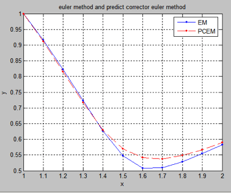
观察图象发现在1.4到2.0区间两种方法的结果有较大差异。
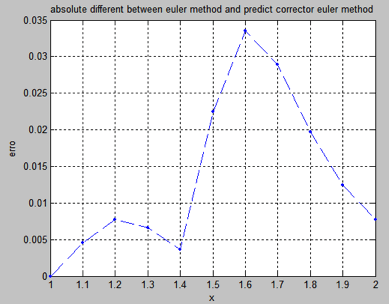
从两种方法的绝对差值曲线中看出x=1.6处两种方法结果差别最大。
现在调节步长到0.01观察图象解的变化。
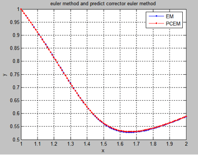
观察这幅图象发现两种方法的解比步长为0.1时候更为接近。
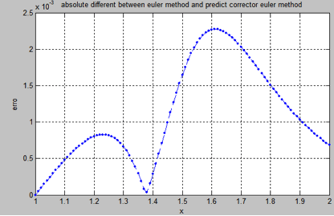
观察两种方法的绝对差值曲线发现结果相差最大在x=1.6附近与步长为0.1时候不同。并且两种方法的结果差值在1e-3量级。
(2)
1.主函数：（主函数与一题大体相同差别仅仅在于调用的子函数不同）
% main function for experment
8.9-2
%Initialize variables.
h=input('请输入步长：\n');
t=[0 1];
y0=1;
%euler method.
[tout1,yout1]=eulerm('df2',t,y0,h);
figure(1);
plot(tout1,yout1,'b.-');
title('euler method and
predict corrector euler method');
hold on;
%predict corrector method.
[tout2
yout2]=pceuler('df2',t,y0,h);
plot(tout2,yout2,'r.--');
legend('EM','PCEM');
ylabel('y');
xlabel('x');
hold off;
grid on;
figure(2)
err=abs(yout2-yout1);
plot(tout1,err,'.--');
title('absolute different
between euler method and predict corrector euler method');
ylabel('erro');
xlabel('x');
grid on;
2. 待求解ODE子函数：
%目标常微分方程组
function yout=df2(x,y)
yout=x^2+x*y^2;
MATLAB运行结果：
1.数值解：（为了能够列出先取步长为0.1）
>> eulermain2
请输入步长：
0.1
>> [tout1',yout1']
ans =
0
1.0000
0.1000
1.0000
0.2000
1.0110
0.3000
1.0354
0.4000
1.0766
0.5000
1.1390
0.6000
1.2288
0.7000
1.3554
0.8000
1.5330
0.9000
1.7851
1.0000
2.1528
1.1000
2.7163
>> [tout2',yout2']
ans =
0
1.0000
0.1000
1.0055
0.2000
1.0234
0.3000
1.0568
0.4000
1.1103
0.5000
1.1900
0.6000
1.3055
0.7000
1.4721
0.8000
1.7163
0.9000
2.0895
1.0000
2.7051
1.1000
3.8695
第一个ans为显式欧拉法解出的结果第一列为x第二列为y，第二个ans为改进欧拉法解出的结果。对比可以发现，两种方法的结果有一定差别。
2.图象解：
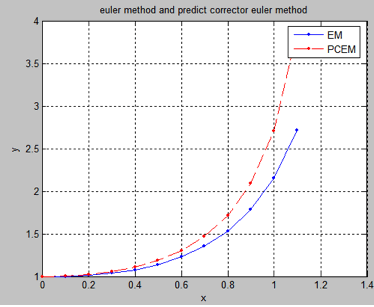
对比两种方法的图象解发现两种方法结果的差距在增大。
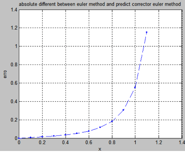
从两种方法结果的绝对差值曲线上看出，两种方法结果的差距随着x单调递增。
现在把步长缩短到0.01观察图象解：
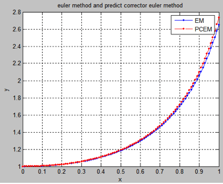
图像上看出吧步长缩短后，两种方法的差距在减小。
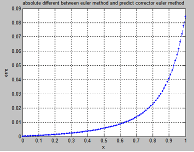
显然缩短步长后的绝对差距曲线值在减小但是单调递增的趋势不变。
扩展实验：用改进欧拉法（预测校正欧拉法）和2到3阶Runge-Kutta法解下列ODE。（RK23采用自动调节步长的BS23算法）并比较结果：
ode23tx程序引用自 Cleve Moler . www.mathwork.com
显然该微分方程为三角函数的特征方程并且其解为y=cos（x）
其相空间曲线为一个圆，
首先化高次的常微分方程为一阶的方程组
或者将其改为矩阵形式=
1. 主函数：
%compare between Runge-kutta
methods and predict corrector euler method.
%this case's absolute solution
is sin(t) and cos(t)
%so the phase space is a
circle-->x^2+y^2=1
%in some ways,this is a
numerical method to generate circle....
%Initialize variables.
%由于预测校正欧拉法没有自动步长调节功能所以需要指定步长
h=input('请输入预测校正欧拉法步长：\n');
t=[0 2*pi];
y0=[1 0];
%euler method
[tout1,yout1]=pceuler1('harmonic',t,y0,h);
figure(1);
subplot(1,2,1);
plot(tout1,yout1,'b.-');
legend('EM');
title('Runge-kutta method and
predict corrector euler method');
hold on;
%predict corrector method
[tout2
yout2]=ode23tx(@harmonic,t,y0);
plot(tout2,yout2,'r.--');
legend('EM' , 'RK23');
ylabel('y');
xlabel('x');
hold off;
grid on;
%draw phase space line
subplot(1,2,2);
plot(yout1(1,:),yout1(2,:),'r.-',yout2(:,1),yout2(:,2),'b.--',0,0,'r*');
legend('EM','RK23');
ylabel('y"');
xlabel('y');
title('phase space line');
axis equal;
grid on;
%err line
figure(2)
err1=abs(yout1(1)-cos(tout1));
err2=abs(yout2(1)-cos(tout2));
subplot(1,2,1);
plot(tout1,err1,'r.-',tout2,err2,'b.--');
legend('EM','RK23');
title('absolute erro for y');
ylabel('y erro');
xlabel('x');
grid on;
subplot(1,2,2)
err1=abs(yout1(2)-cos(tout1));
err2=abs(yout2(2)-cos(tout2));
plot(tout1,err1,'r.-',tout2,err2,'b.--');
legend('EM','RK23');
title('absolute erro for
y"');
ylabel('y" erro');
xlabel('x');
grid on;
2. Pceuler子函数(改进欧拉法计算函数)
%Predictor
Corrector Euler Methodmethod
function
[tout,yout]=pceuler1(F,tspan,y0,h)
% Initialize
variables.
syms ts;
syms ys;
tstart=tspan(1);
tfinal=tspan(2);
t=tstart;
y=y0;
ys=y;
ts(1)=t;
i=2;
%main compute
while
(t<=tfinal)
k1=feval(F,t,y);
k2=feval(F,t+h,y+h*k1');
y=y+h*(k1'+k2')/2;
ys(i,:)=y;
t=t+h;
ts(i)=t;
i=i+1;
end
%output.
tout=double(ts);
yout=double(ys');
3. ode23tx子函数（采用自动调节步长的BS23算法（RK23））：
function
[tout,yout] = ode23tx(F,tspan,y0,arg4,varargin)
%ODE23TX Solve non-stiff differential equations. Textbook version of ODE23.
%
% ODE23TX(F,TSPAN,Y0) with TSPAN = [T0 TFINAL]
integrates the system
% of differential equations dy/dt = f(t,y)
from t = T0 to t = TFINAL.
% The initial condition is y(T0) = Y0.
%
% The first argument, F, is a function handle
or an anonymous function
% that defines f(t,y). This function must have two input arguments,
% t and y, and must return a column vector of
the derivatives, dy/dt.
%
% With two output arguments, [T,Y] =
ODE23TX(...) returns a column
% vector T and an array Y where Y(:,k) is the
solution at T(k).
%
% With no output arguments, ODE23TX plots the
emerging solution.
%
% ODE23TX(F,TSPAN,Y0,RTOL) uses the relative
error tolerance RTOL
% instead of the default 1.e-3.
%
% ODE23TX(F,TSPAN,Y0,OPTS) where OPTS =
ODESET('reltol',RTOL, ...
% 'abstol',ATOL,'outputfcn',@PLOTFUN) uses relative
error RTOL instead
% of 1.e-3, absolute error ATOL instead of
1.e-6, and calls PLOTFUN
% instead of ODEPLOT after each successful
step.
%
% More than four input arguments,
ODE23TX(F,TSPAN,Y0,RTOL,P1,P2,...),
% are passed on to F, F(T,Y,P1,P2,...).
%
% ODE23TX uses the Runge-Kutta (2,3) method of
Bogacki and Shampine (BS23).
%
% Example
% tspan = [0 2*pi];
% y0 = [1 0]';
% F = @(t,y) [0 1; -1 0]*y;
% ode23tx(F,tspan,y0);
%
% See also ODE23.
% Initialize
variables.
rtol = 1.e-3;
atol = 1.e-6;
plotfun = @odeplot;
if nargin >= 4
& isnumeric(arg4)
rtol = arg4;
elseif nargin >=
4 & isstruct(arg4)
if ~isempty(arg4.RelTol), rtol =
arg4.RelTol; end
if ~isempty(arg4.AbsTol), atol =
arg4.AbsTol; end
if ~isempty(arg4.OutputFcn), plotfun =
arg4.OutputFcn; end
end
t0 = tspan(1);
tfinal = tspan(2);
tdir = sign(tfinal
- t0);
plotit = (nargout
== 0);
threshold = atol /
rtol;
hmax =
abs(0.1*(tfinal-t0));
t = t0;
y = y0(:);
% Initialize
output.
if plotit
plotfun(tspan,y,'init');
else
tout = t;
yout = y.';
end
% Compute initial
step size.
s1 = F(t, y,
varargin{:});
r =
norm(s1./max(abs(y),threshold),inf) + realmin;
h =
tdir*0.8*rtol^(1/3)/r;
% The main loop.
while t ~= tfinal
hmin = 16*eps*abs(t);
if abs(h) > hmax, h = tdir*hmax; end
if abs(h) < hmin, h = tdir*hmin; end
% Stretch the step if t is close to tfinal.
if 1.1*abs(h) >= abs(tfinal - t)
h = tfinal - t;
end
% Attempt a step.
s2 = F(t+h/2, y+h/2*s1, varargin{:});
s3 = F(t+3*h/4, y+3*h/4*s2, varargin{:});
tnew = t + h;
ynew = y + h*(2*s1 + 3*s2 + 4*s3)/9;
s4 = F(tnew, ynew, varargin{:});
% Estimate the error.
e = h*(-5*s1 + 6*s2 + 8*s3 - 9*s4)/72;
err = norm(e./max(max(abs(y),abs(ynew)),threshold),inf)
+ realmin;
% Accept the solution if the estimated error
is less than the tolerance.
if err <= rtol
t = tnew;
y = ynew;
if plotit
if plotfun(t,y,'');
break
end
else
tout(end+1,1) = t;
yout(end+1,:) = y.';
end
s1 = s4; % Reuse final function value to start new
step.
end
% Compute a new step size.
h = h*min(5,0.8*(rtol/err)^(1/3));
% Exit early if step size is too small.
if abs(h) <= hmin
warning('Step size %e too small at t =
%e.\n',h,t);
t = tfinal;
end
end
if plotit
plotfun([],[],'done');
end
4．Harmonic子函数（ODE方程，描述谐波振荡）：
function
yout=harmonic(t,y)
yout=[y(2);-y(1)];
运行结果：（图象比较）
两种方法的数值解曲线
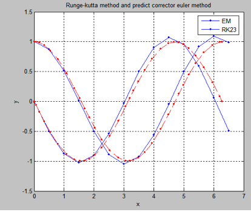
两种方法的数值解相空间曲线
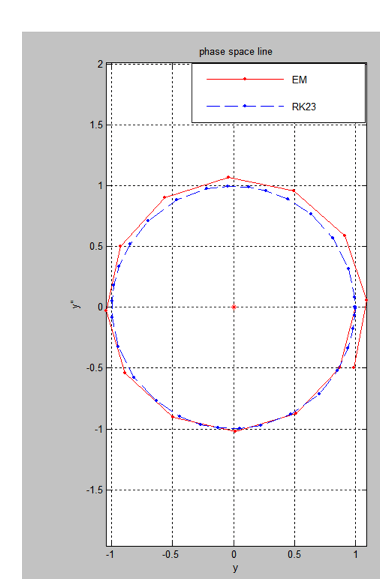
与精确解的误差比较曲线
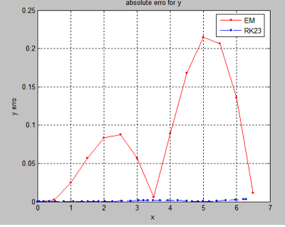
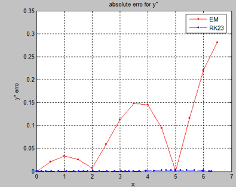
两幅一个表示y（x）的绝对误差另一个表示y’(x)的相对误差。
现在把欧拉法的步长缩小到0.01观察结果并比较：
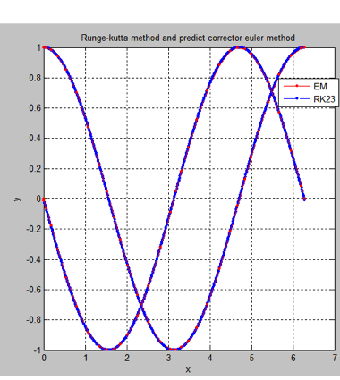
观察图象可以发现两种方法的解基本重叠在一起，两条曲线表示y（x）下，
与y‘（x）上。
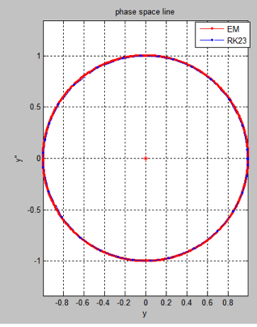
解的空间相曲线。可以看出其为一个非常好的圆，半径为1，原点在（0,0）点。

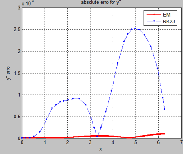
改进欧拉法数值方法的解与精确解之间的绝对误差缩到很小，由于步长选的很短，其绝对误差已经比自适应2到3阶runge-kutta法得到的数值解小。而且小得多。
现在将时间取长一些取到6: 观察误差的传播情况：
解的图象：
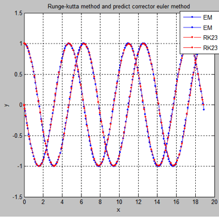
从表面上看起图形就是cos（x）与-sin（x）正弦余弦曲线的图象，似乎方法没有问题。
相空间（拓扑空间）曲线：
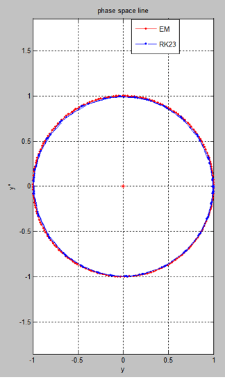
其拓扑空间的曲线仍然为一个圆，只不过已经转了三圈了。表面上看好像就是两条轨迹一红一蓝。
现在把图像放大：

这样可以发现明显空间相曲线是转了三圈形成的。精确解的空间相曲线无论转多少圈都应该重合。所以这里也可以看出数值方法的误差。
观察误差曲线：
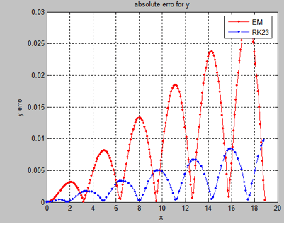
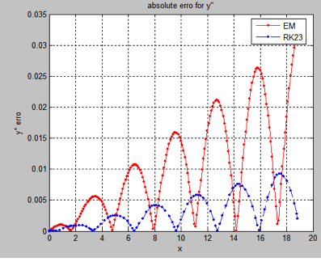
观察改进Euler法的误差曲线（红色）发现数值解无论是y还是其导数y’与精确解cos(t),-sin(t)的误差都在不断的较快累积，虽然正大过程不是单调的是在震荡，但是总体的趋势是在不断的增大。所以该数值方法在解决这一类谐波振荡器问题时，t偏离初始值太远后解的可靠性会较差。
观察RK23法的误差曲线（蓝色）发现虽然误差是在增加（积累）但是增加的较慢，而且整体而言误差比改进Euler法要小，随着t的增长RK23算法的误差将明显小于改进Euler法。所以自适应的RK23算法比改进Euler算法要好。
实验总结：
运用了MATLAB的向量处理功能，所编辑的欧拉法与改进欧拉法程序不但可以计算常微分方程，还可以计算高阶的常微分方程，即常微分方程组。
所编程序中步长需要事先指定，并且可以观察到步长缩短，数值解在向精确解逼近。而BS23算法利用的是常微分方程的Runge-Kutta算法并且还有自动调节步长功能，使得数值解更加可靠并且所占用空间也更合理。